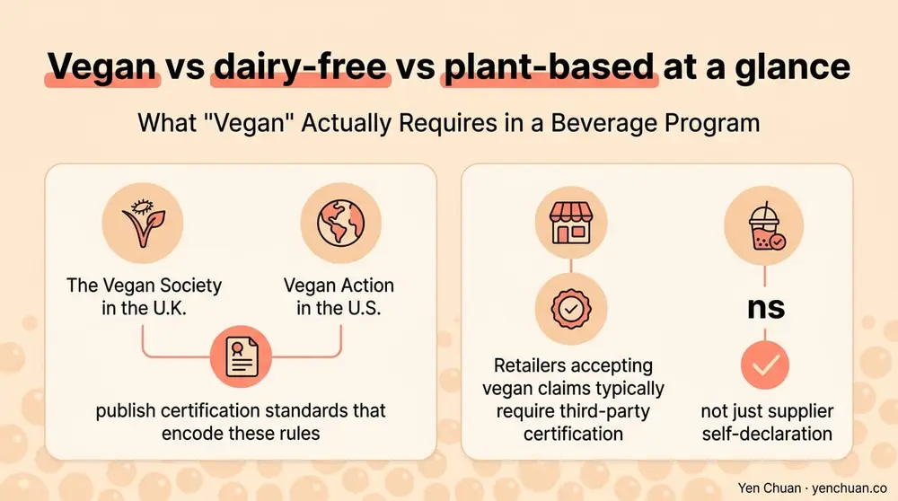
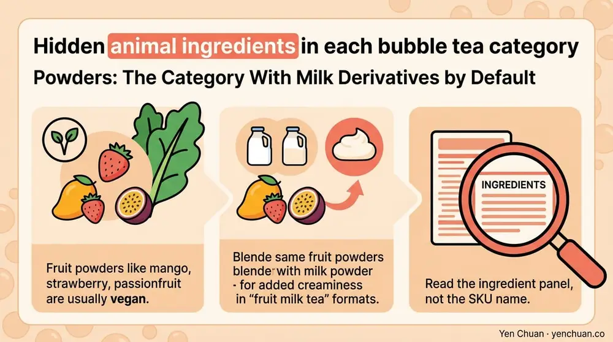

Articles / Business & sourcing
Vegan Bubble Tea Ingredients: B2B Checklist
2026-05-12 · Sourcing, Industry Trends

Original public content from Yen Chuan. Product claims and specifications remain subject to confirmation by the company.
A bubble tea menu can look plant-based on paper and still fail a strict vegan audit. Gelatin in pudding topping, sodium caseinate in non-dairy creamer, lactose-carrying "natural flavor," honey in syrup, shellac glaze on popping boba — these are the ingredients that quietly disqualify a drink from vegan certification or a retailer's plant-based program.
This guide is a practical sourcing checklist for boba shop owners, chain procurement teams, and private label developers building a verified vegan bubble tea line. It covers the four categories that matter — toppings, creamers, syrups, and powders — plus the documentation and certifications buyers should request from suppliers.
What "Vegan" Actually Requires in a Beverage Program
Vegan differs from dairy-free, plant-based, and vegetarian in ways procurement teams often blur. Dairy-free excludes milk proteins but permits eggs, gelatin, and honey. Plant-based is a marketing term with no regulatory definition. Vegetarian excludes meat but permits dairy, eggs, and honey. Vegan excludes every animal-derived ingredient, including trace processing aids.
For a bubble tea menu to be credibly vegan, every SKU must pass four tests:
- No animal-derived ingredient anywhere in the formulation, including sub-ingredients inside compound items like "natural flavor"
- No processing aids of animal origin — gelatin, isinglass, bone char, casein, shellac
- No shared-equipment cross-contamination without rigorous cleaning validation
- No animal testing on the finished product or its ingredients
The Vegan Society in the U.K. and Vegan Action in the U.S. both publish certification standards that encode these rules. Retailers accepting vegan claims typically require third-party certification, not just supplier self-declaration.

Toppings: The Category With the Most Hidden Traps
Toppings are where most vegan bubble tea programs fail audit. Standard pitfalls:
Pudding topping. Traditional egg pudding contains whole eggs and milk. Vegan pudding is typically thickened with agar or konjac and sweetened with coconut milk or plant cream. Always request the full recipe — a "plant-based pudding" label does not always mean vegan if the formulation includes egg white powder for texture.
Grass jelly and herbal jelly. Usually vegan by default, made from Mesona chinensis extract, water, and starch. Verify no gelatin has been added for firmness in regional variants.
Popping boba. The alginate-based shell is vegan, but the fruit juice filling sometimes contains red dye derived from cochineal (carmine, E120), an insect-based colorant. Request a color declaration. Additionally, some popping boba manufacturers finish with a shellac or beeswax glaze for gloss; both are animal-derived.
Pudding alternatives. Coffee jelly, lychee jelly, and aloe vera cubes are typically vegan. Crystal boba made from konjac is vegan. Taro balls and sweet potato balls use plant starches and are usually vegan, though some recipes add a small amount of milk powder for richness.
Tapioca pearls. Classic black boba is made from tapioca starch, water, and brown sugar. The pearls themselves are vegan. Watch for caramel coloring — some industrial caramel colors use lactose as a precursor. Ask suppliers for a vegan declaration on the finished pearl, not just the dry pearl.
Our Tapioca Pearls & Toppings catalog is audited for vegan compliance, with certificate-backed declarations available on request.
Creamers: The Dairy Trap Most Shops Miss
"Non-dairy creamer" is one of the most misleading labels in bubble tea sourcing. The category historically includes sodium caseinate — a milk-derived protein — which means a "non-dairy" creamer can still contain dairy. U.S. FDA labeling allows this because the caseinate level is below the thresholds that trigger dairy disclosure.
True vegan creamer excludes caseinate. Primary formulations use:
- Coconut oil or coconut milk powder as the fat base
- Tapioca or corn maltodextrin as the carrier
- Soy or pea protein for creaminess
- Sunflower or soy lecithin as emulsifier
- Dipotassium phosphate or sodium citrate as buffer
Performance varies. A coconut-oil-based vegan creamer delivers strong mouthfeel and foam stability, close to traditional creamer. Oat-based creamers taste cleaner but can curdle in acidic tea bases (oolong, jasmine). Soy-based creamers perform well across temperatures but introduce an allergen.
Request a certificate of analysis showing casein, whey, lactose, and milk fat at non-detectable levels. A vegan declaration alone is insufficient without test data for export programs.
Both our non-dairy creamer and vegan creamer lines carry third-party vegan verification — the non-dairy SKU is formulated without caseinate, unlike the industry default.
For operators weighing creamer sourcing more broadly, our RSPO vs Non-RSPO creamer comparison covers palm oil certification, which many vegan-focused buyers also request.
Syrups: Honey, Natural Flavors, and Color Traps
Bubble tea syrups are mostly vegan-safe but three ingredients routinely compromise the category.
Honey. Honey is not vegan. Some brown sugar syrups, ginger syrups, and "honey milk tea" flavor bases contain real honey or honey flavor (which may be honey-derived). Always confirm. Plant-based alternatives include date syrup, agave, maple syrup, and coconut nectar.
Natural flavors with animal origin. The phrase "natural flavor" on a bubble tea syrup label can include castoreum (beaver), cochineal, or dairy-derived components. Strict vegan sourcing requires disclosure of natural flavor sub-ingredients under NDA.
Colorants. Red, pink, and orange syrups may use cochineal (carmine, E120) for color. Confirmed vegan syrups use beet, annatto, paprika, or grape skin extract instead. Some clear fruit syrups use isinglass (fish bladder) or gelatin for clarification during manufacturing; this is an unlabeled processing aid that disqualifies vegan certification.
Glycerin. Vegetable glycerin is vegan. Animal-derived glycerin (from tallow) is not. Most commercial syrups use vegetable glycerin by default, but cheaper supply can include animal fats. Ask for certificate of origin.
For a fully vegan syrup lineup, our Premium Fruit Syrups are manufactured without animal-derived colorants, clarifiers, or flavors, and come with vegan certification documentation.
Powders: The Category With Milk Derivatives by Default
Milk tea powders, taro powder, matcha milk powder, and flavored milk tea blends almost always contain dairy unless specifically reformulated. Hidden dairy ingredients in powders include:
- Whey protein concentrate (WPC) or whey protein isolate (WPI)
- Sodium caseinate, calcium caseinate
- Lactose, anhydrous milk fat
- Skim milk powder, whole milk powder
- "Milk flavor" natural flavor systems that include dairy solids
Vegan milk tea powders replace the dairy base with coconut milk powder, oat milk powder, soy milk powder, or pea protein isolate. Taste and mouthfeel vary significantly; chains typically run sensory trials with three to four powder bases before specifying a vegan SKU.
Matcha powder is vegan by default — pure stone-ground green tea. Matcha latte powder usually contains milk solids. Always verify the SKU, not the ingredient name.
Fruit powders (mango, strawberry, passionfruit) are usually vegan but sometimes blended with milk powder for creaminess in "fruit milk tea" formats. Read the ingredient panel, not the SKU name.

Certifications Worth Requesting
Supplier self-declarations are a starting point. Third-party certifications are what retailers and auditors actually accept.
| Certification | Scope | Region |
|---|---|---|
| The Vegan Society Trademark | Full vegan + non-animal-tested | U.K., global |
| Vegan Action Certified Vegan | Full vegan | U.S., global |
| V-Label | Vegan or vegetarian tiered | EU, global |
| ISO 23662 Vegan Food | Technical vegan standard | Global |
| Halal certification (partial overlap) | No pork or alcohol; not vegan | Muslim-majority markets |
For U.S. and European buyers, V-Label and Vegan Action are the most commonly specified in retail vendor manuals. Expect 6 to 12 weeks for a new SKU to clear certification, which is why most vegan bubble tea programs launch with pre-certified ingredients rather than building from scratch.
For broader supplier vetting, our milk tea supplier guide walks through quality audits, pricing, and logistics. For operators concerned about ingredient transparency more generally, our clean label beverage ingredients guide covers the parallel audit framework.
The Procurement Checklist
Use this as a first-round supplier questionnaire for any new vegan SKU:
- Provide the finished product ingredient declaration, with every sub-ingredient inside compound items disclosed under NDA.
- Confirm absence of whey, casein, lactose, milk fat, eggs, honey, gelatin, carmine, shellac, and isinglass.
- Supply a third-party vegan certificate (Vegan Society, Vegan Action, V-Label) with current expiration date.
- Declare all processing aids, clarifiers, and filter media, including animal-derived materials below labeling thresholds.
- Provide an allergen management statement covering shared equipment and cross-contamination protocols.
- Confirm colorants and flavor carriers are plant-derived (no cochineal, no animal glycerin).
- Supply country of origin for the primary protein or fat source (coconut, soy, oat, pea).
- Confirm non-GMO status if required by target market (EU retail typically requires this).
Operators who run this checklist with suppliers before onboarding avoid 90% of the audit findings that disrupt vegan program launches. Retailers reward the discipline with faster listing decisions and fewer product pulls.
Sources
- The Vegan Society: Vegan Trademark standard
- Vegan Action / Vegan Awareness Foundation certification
- V-Label international vegan certification
- U.S. FDA Food Allergen Labeling and Consumer Protection Act (FALCPA)
- Grand View Research: Plant-Based Food & Beverages Market 2024
About Yen Chuan
Yen Chuan has been at the heart of Taiwan's bubble tea industry for over 20 years, supplying premium powders, syrups, tapioca pearls, and tea leaves to thousands of boba shops worldwide. With an in-house R&D lab and a commitment to quality ingredients, Yen Chuan is more than a supplier — we're your partner in the boba business. Our vegan-verified lineup covers creamers, syrups, pearls, and powders with third-party certification, and we support co-packer and private label programs targeting U.S., EU, and APAC retail.
Building a verified vegan bubble tea menu and need certified, audit-ready ingredients? Browse our vegan catalog or talk to our sourcing team — we will provide vegan certificates, allergen statements, and country-of-origin documentation on every line.
Frequently Asked Questions
Q: Is non-dairy creamer the same as vegan creamer? A: No. Many non-dairy creamers contain sodium caseinate, a milk-derived protein that U.S. labeling allows below certain thresholds. A true vegan creamer must exclude caseinate and all dairy derivatives, so always ask for a certificate of analysis confirming casein, whey, lactose, and milk fat are non-detectable.
Q: Are tapioca pearls vegan? A: Yes, classic tapioca pearls are made from tapioca starch, water, and brown sugar, which are all plant-derived. The risk is caramel coloring made with lactose precursors and pearl syrup soaks that may include honey, so request a vegan declaration on the finished soaked pearl.
Q: Are popping boba vegan? A: The alginate shell is vegan, but popping boba often uses cochineal (carmine) color derived from insects, and some manufacturers apply a shellac or beeswax glaze. Request a full color and surface-treatment declaration before approving for a vegan menu.
Q: What vegan certifications do retailers accept? A: Vegan Society Trademark, Vegan Action Certified Vegan, and V-Label are the most widely accepted in U.S., EU, and APAC retail. Supplier self-declarations alone are typically not sufficient for retail vendor manuals or chain franchise specifications.
Q: Can milk tea powder be made vegan? A: Yes, vegan milk tea powders replace dairy with coconut milk powder, oat milk powder, soy milk powder, or pea protein isolate. Taste and foam stability vary, so most chains run sensory trials with several powder bases before finalizing a vegan SKU.